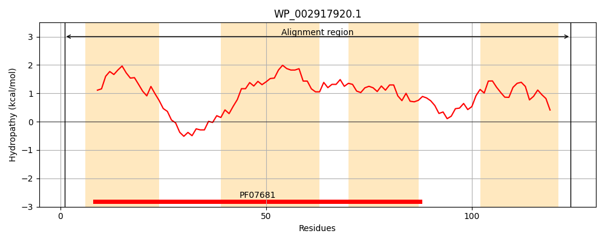
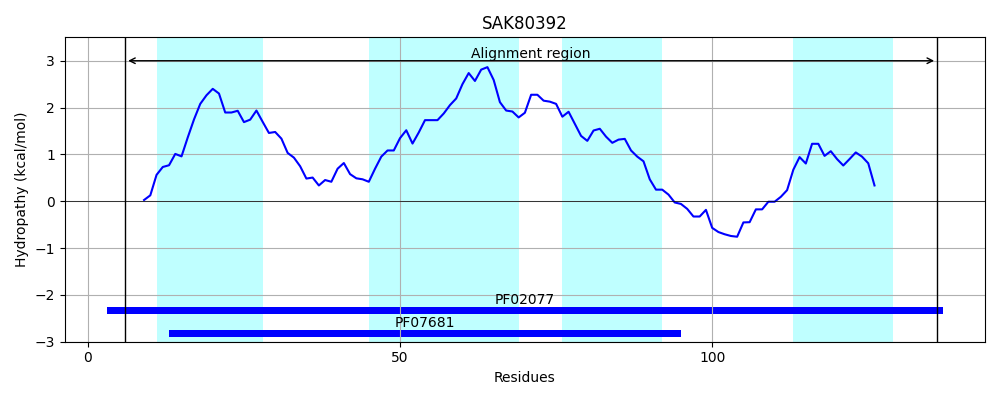
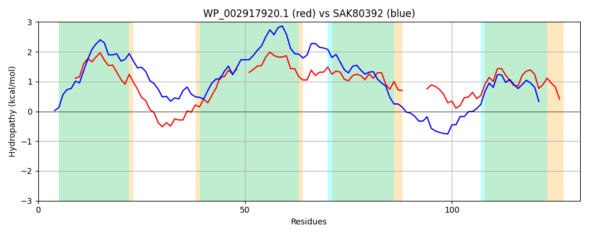

Hit Accession: SAK80392
Hit TCID: 9.B.214.2.2
Hit Description: gnl|BL_ORD_ID|20095 gnl|TC-DB|SAK80392.1|9.B.214.2.2 DoxX family protein [Burkholderia ptereochthonis]
Mach Len: 131
e:0.000000
Query TMS Count : 4
Hit TMS Count: 4
TMS-Overlap Score: 3.650000
Predicted Substrates:None
BLAST Alignment:
Score: 240 , Bit scores: 97 bits, E-value: 5.4e-27, Alignment length: 131, Percentage identity: 40
Query: 1 MKKLEDVGVLVARILMPILFITAGWGKITGYAGTQQYMEAMGVPGALLP--LTILLEFGGGLAILFGFLTRTTALFTAGFTLLTAFLFH-----SNFAEGVNSLMFMKNLTIAGGYLLLAITGPGAFSIDR 124
+++ +D +LVAR+L+ ILF+ GW K+ G++GT YM ++G P + +++E G+AI+ G TR AL A +TL TA + H A N++ F KN++I GG +LL+ITGPG +S DR
Sbjct: 6 LEQQKDPLLLVARVLLMILFVLFGWQKLIGFSGTVSYMTSVGAPAPTFSAIIAVVMELVVGIAIVLGLFTRPLALLLALYTLGTALIGHHYWTMEGAARYANTINFYKNISIMGGLILLSITGPGKYSFDR 136 | Protein Hydropathy Plots: |
|---|
|  |  |
Pairwise Alignment-Hydropathy Plot:
|
|---|
|  |